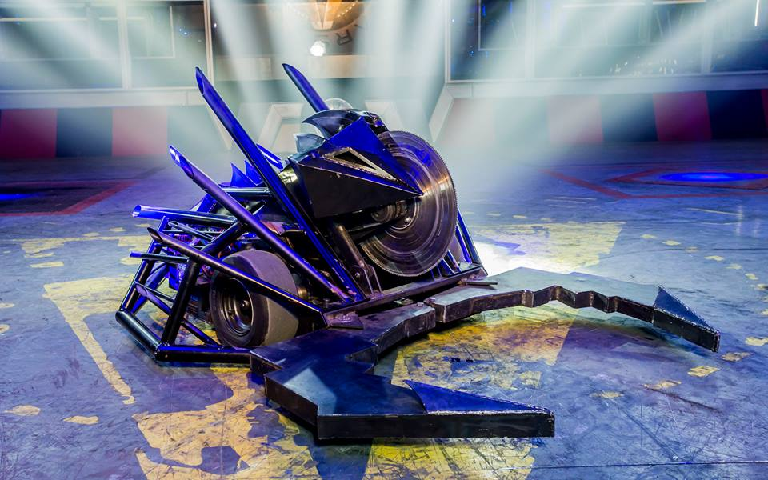
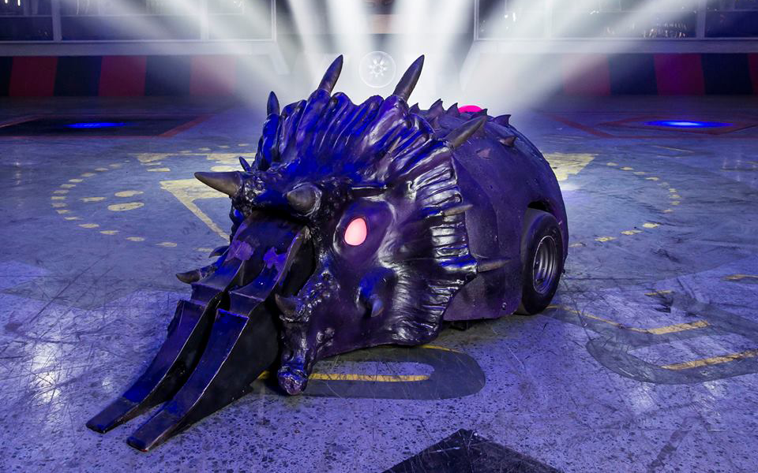
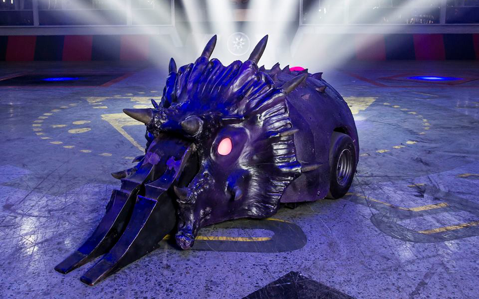
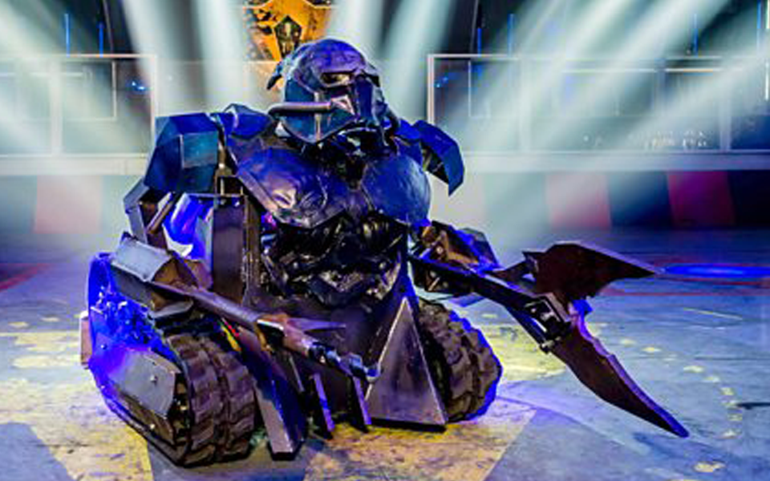
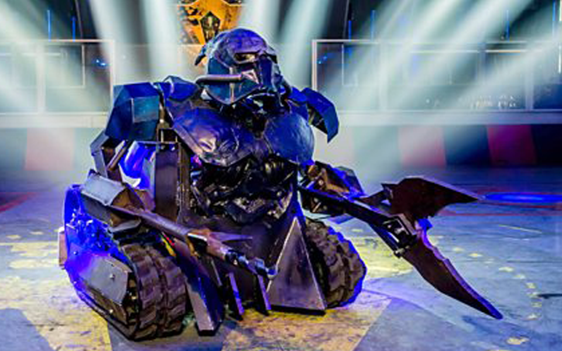

 

 

Robot Wars is a robot combat competition that was broadcast on British television from 1998 to 2004 and again from 2016 to 2018. The series, centred on the sport of robot combat, involves teams of amateur and professional roboteers operating their own constructed remote controlled robots to fight against each other, whilst also avoiding arena hazards and more powerful "House Robots", which were not bound by the same weight or weapon limits as the contestants. Earlier series included assault and trial courses for competing robots before they were ceased from the first "Extreme" series onwards.
The Renfrew arena used for the rebooted series.There were numerous arena incarnations used during the original run of Robot Wars on the BBC. These arenas were also used by international versions such as Robot Wars: Extreme Warriors in the United States. The arena was approximately 32 by 48 feet (9.8 by 14.6 m). For Series 1 to 3 the arena was not enclosed as such, as the audience were raised above the arena. The increasing sophistication of weaponry from contestant robots - most notably demonstrated by Hypno-Disc in Series 3 - as well as arena hazards prompted producers to enclose the arena entirely in a perspex box 20 feet (6.1 m) high from Series 4 onwards, to protect the audience and production team from debris